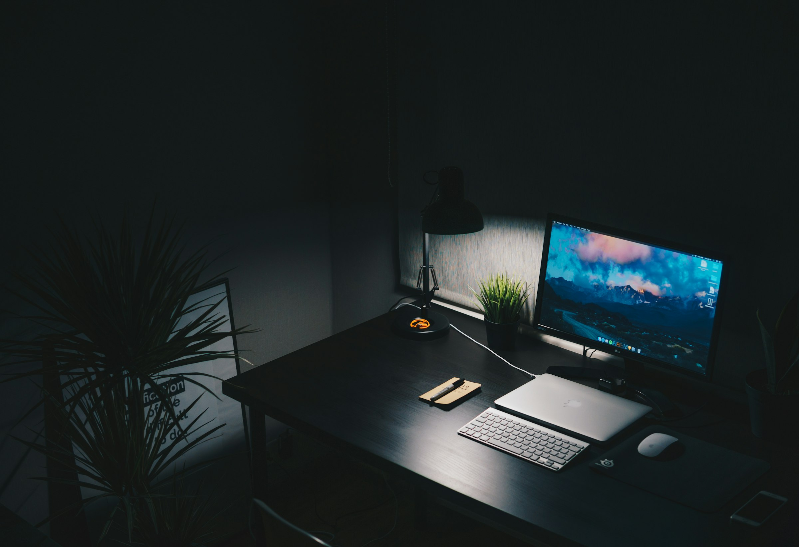

Two desks
Opens on a calm, dark photo of the studio: two desks, nobody at them. Headline left, nothing else moving.
Scrolling pushes the camera in slowly and dims it; a name pins to each desk (Shaun left, Noah right). Each pin then drops into its own portrait panel below. The manifesto line and the four promises light up one at a time. The close goes back to the desks, with the Kampala clock from Contact.
Fonts
Contact set: Gloock, Bricolage Grotesque, Martian Mono
Needs
1 stock photo: two empty desks side by side in a dim studio at night, two screens glowing, no people (Unsplash/Pexels). Stand-in shown.
KAISER PICK

About · Shaun & Noah
We build it.
We keep it running.
A two-person web and creative studio in Kampala. Nine services, one small team, clear prices.
SCROLL
AT REST (PHOTO IS A STAND-IN)
Two desks. Two people.
No middle layer.
01 · Shaun
Design & the creative studio
02 · Noah
Engineering & care
AFTER SCROLL: SLOW PUSH-IN, A NAME PINS TO EACH DESK
01 · Who we are

Shaun
Leads design and the creative studio: UI, video, presentations and ad creative.
Noah
Leads engineering: web apps, custom systems, care plans and upgrades.
WHO WE ARE: THE PINS DROP INTO TWO PORTRAITS
02 · How we work
A website should not be something you buy once and then worry about. It should work for you every day and get better.
01
Fixed quote first
Price agreed before a line is written.
02
Talk to the builders
Two people, direct line.
03
Fast, honest timelines
04
We stay on
HOW WE WORK: PROMISES LIGHT UP ONE BY ONE
Your turn
Let's build yours.
Get in touch →
16:26
EAT · reply within a day
CLOSE: BACK AT THE DESKS, CLOCK FROM CONTACT